INTRO
어느새 돈이 학교에 입학할 때가 되었다. 시간이 이렇게 빠른가 싶다. 우리는 눈에 넣어도 아프지 않을 돈의 학부모가 되어, ￦라는 옷을 입혀서 학교에 보낼 것이다.
돈이 교실 문을 열고 들어간다. 의자에 많은 친구들이 앉아있다. 다 비슷비슷하게 생겼는데, 입고 있는 옷들은 다양하다. 뒷줄에는 덩치도 크고, 힘도 세보이는 친구들이 요즘 잘 나간다는 $, ¥, €같은 옷을 입고 자기들끼리 이야기하고 있다. 앞줄에는 조금 왜소해보이지만, 안경을 끼고 벌써부터 학구열이 불타는 친구들이 앉아있다.
돈 : '후.. 벌써 사회생할의 시작이고만;; 여긴 정글이야. 정신 똑바로 차리자!'
우리의 돈은 중간 정도에 비어있는 자리에 가서 슬쩍 앉았다. 서로 처음 보는 친구들끼리 서로 알아가느라 교실은 왁자지껄하다. 그러다 종이 울리고 선생님이 들어왔다.
선생님 : 안녕 얘들아? 나는 오늘부터 너희들을 가르치게 될 담임이야. 만나서 반갑다.
돈 : 안녕하세요~
선생님 : 그럼 수업을 시작해볼까?
돈 : 네~!!
수업이 시작되었다.
지금까지 우리는 돈에 대해 꽤 많은 것을 살펴봤다. 돈이 태어나면서부터 어린이 시절을 보낼 때까지, 어떻게 성장해 왔는지 지켜보면서 말이다. 이젠 살펴봤던 내용들 중 중요한 부분을 짚으면서 깔끔하게 정리도 할겸, 더 자세한 내용을 알려주는 수업을 들으면서 체계적으로 배워볼 시간이다.
1교시 : 돈의 본질
세상이 어떻게 생겼는지 직관적으로 이해하는 것의 첫 걸음은 돈과 물건을 명확하게 구분짓는 것으로 시작한다.
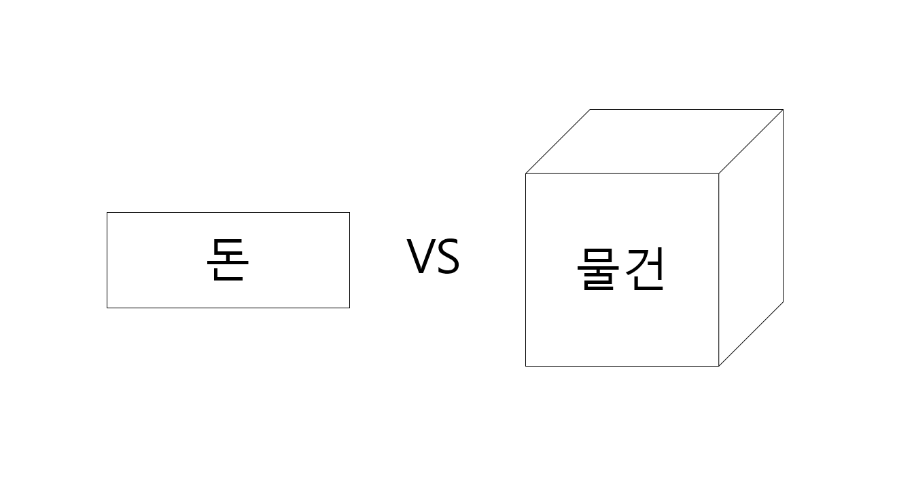둘 사이에 가장 큰 차이점은 돈 그 자체에는 별다른 가치가 없고, 그 가치는 물건에 있다는 것이다. 돈으로 할 수 있는 것은 별로 없다. 어려운 말로, 돈에는 내재가치가 없다고 한다. 아무튼 돈 그 자체는 종이조각에 불과하기 때문에, 해봤자 메모장정도로밖에 사용하질 못한다. 반면, 모든 물건에는 가치가 있다. 옷에는 우리의 몸을 보호해주고 꾸며주는 가치가 있고, 빵에는 우리의 배고픔을 해결해준다는 가치가 있다.
이러한 차이점을 좀 더 큰 관점에서 바라보면, 우리가 사는 경제구조를 단순하게 쪼개볼 수 있다. 돈과 관련된 일을 하는 분야인 금융경제와, 물건과 관련된 일을 하는 분야인 실물경제로 말이다.
돈 그 자체에는 가치가 없으므로 은행, 증권사 같은 금융기관이 이끄는 금융경제 그 자체 내에는 특별한 가치가 없다. 가치는 공장, 제조기업, 서비스기업 같은 항상 새로운 물건(상품)과 서비스를 만들어내는 곳에 있다. 그래서 이러나 저러나 실물경제에서의 성장이 나와주지 않으면, 금융경제가 아무리 노력해도 사회를 발전시킬 수 없다.
그러면 은행같은 금융기관은 왜 운영되고 있는 것일까? 내재된 가치가 없는 금융경제는 아무런 의미가 없는 것일까? 혹시 있다면 언제 있는 것일까? 금융경제는, 실물경제가 더 많은 성장을 할 수 있도록 도와줄 때 의미를 가진다. 이것은 축구경기에서 감독, 코치가 빛을 발할 때는 실제 선수가 더 잘 뛰어다닐 수 있을 때인 것과 마찬가지다. 분명 경기에서 골은 선수가 넣지만, 그렇다고 코치, 감독이 아무런 역할이 없는 것은 아니다. 다시말해, 실물경제가 원활히 돌아갈 수 있는 환경을 만들어주는 것이 금융경제의 역할이다. 그래서 사회를 살아가는 우리들의 최종 목표는 금융경제를 이용해서 실물경제를 최대한 성장시키는 것이다. 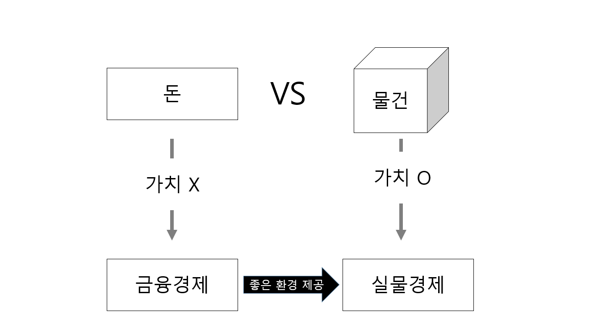
그렇다면 금융경제는 구체적으로 어떻게 실물경제의 성장을 돕는 것일까? 바로 돈의 양을 조절해서 돈의 가치를 변화시키는 방법을 이용한다.
2교시 : 돈의 양 조절 -> 돈의 가치 결정 #금리 #국내
⓪ 돈에게 적용되는 법칙 : 양은 가치와 반대로 움직인다.
금융기관이 돈의 가치를 조절하는 방법을 살펴보기 전에 알아둘 법칙이 한 가지 있다. 바로 양(quantity)과 가치(value)는 반대로 움직인다는 것이다. 어떠한 것의 양이 늘어나면 그것의 가치는 줄어들고, 반대로 양이 줄어들면 가치는 커진다. 즉, 양과 가치는 반비례한다.
지금 수업을 듣고 있는 내가 혹시나 하는 마음에 공책을 잔뜩 가방에 싸가지고 왔다고 생각해보자. 그럼 옆 자리에 노트를 안 가져온 친구한테 쿨하게 한 개를 줄 수도 있을 것이다. 나에겐 공책의 양이 많아 그 가치는 떨어져있기 때문이다. 돈에게도 이 원칙은 그대로 적용된다. 돈의 양이 늘어나면 돈의 가치는 떨어지고, 돈의 양이 줄어들면 가치는 올라간다.
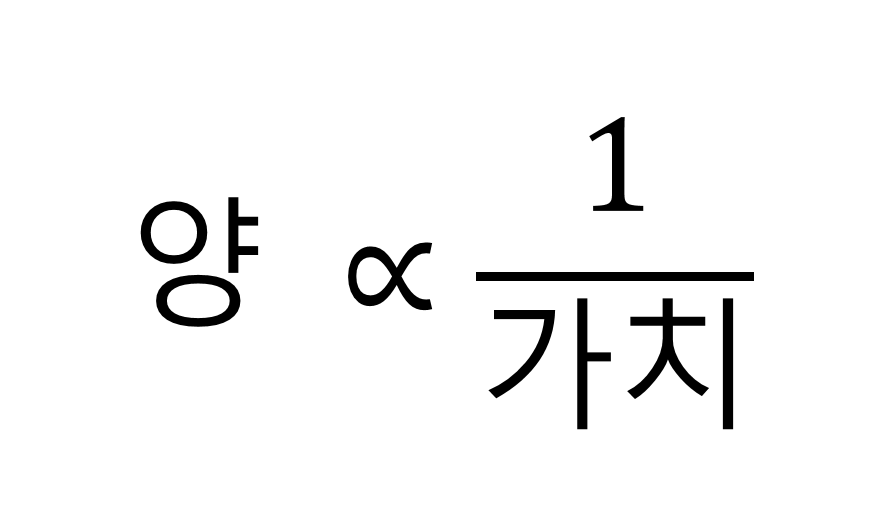➀ 돈의 양
그럼 돈의 양이란 구체적으로 무엇일까? 답을 찾기 위해 돈이 어떻게 구성되어 있는지 알아야한다. 돈은 두 가지 단계에 걸쳐 만들어진다. 맨 처음 중앙은행이 돈을 찍어내고, 시중은행이 신용창출을 통해 돈의 양을 부풀린다. 그래서 돈은 중앙은행이 찍어낸 돈과 신용창출로 부풀려진 돈으로 구성된다. 이렇게 만들어진 돈의 양을 합친 것을 어려운 말로 통화량이라고 부른다.
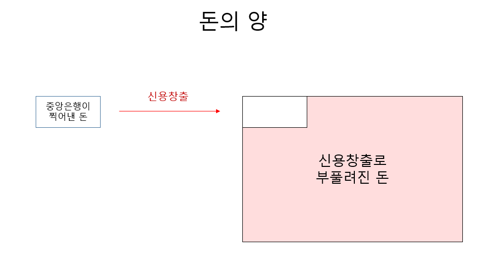➁ 돈의 양 조절 -> 돈의 가치 결정
(1) 방법 = 양적완화, 금리
두 단계에 걸쳐 생긴 돈의 양을 중앙은행이 각각의 단계에서 조절한다. 첫 번째 단계에서는 양적완화, 두 번째 단계에서는 금리라는 도구를 사용해 조절하는 것이다. 양적완화는 중앙은행이 돈을 많이 만들어내는 것을 말한다. 두번째 방법인 금리를 조절하는 것은 신용창출의 규모를 조절하여 신용창출로 만들어지는 돈의 양을 조절한다. 그런데 양적완화라는 것은 자주 사용되는 방법이 아니기 때문에 이번시간에는 금리에 대해 좀 더 자세히 알아볼 것이다.
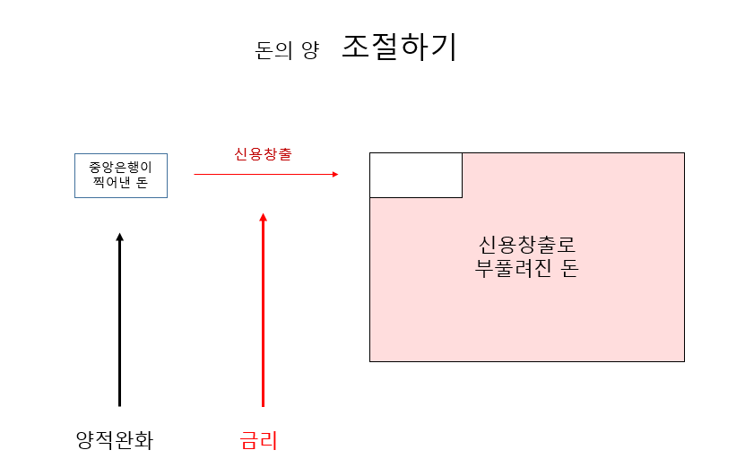금리는 이자율과 같은 말이다. 그리고 금리는 돈의 가격이다. 이 세상의 모든 가격은 수요공급이라는 규칙에 의해 결정된다. 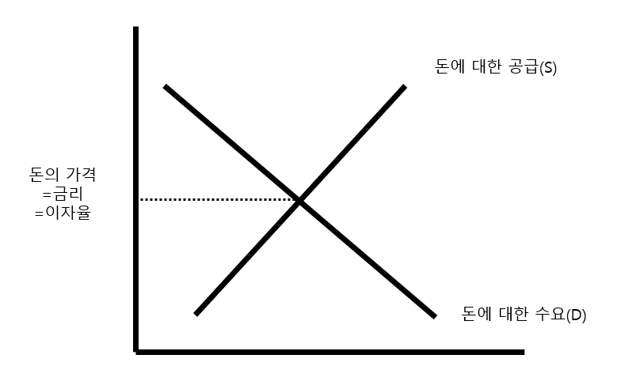
신용창출은 시중은행이 하는 것인데, 어떻게 중앙은행이 금리를 통해 신용창출을 통제한다는 것일까?
중앙은행은 금리들 중 아버지격에 해당하는
기준금리가 올라가면 나머지 금리들도 오르는 경향이 있다. 금리가 오르면 이자율이 높아진다는 것이므로, 사람들은 대출을 받기를 꺼려하게 된다. 그러면 신용창출이 적게 되어 돈의 양이 줄어들게 된다. 반대로, 금리를 내리면 너도나도 대출을 받으려고 할 테니, 신용창출이 많이 되어 돈의 양이 늘어난다.
(2) 결과 = 인플레이션, 디플레이션
돈의 양이 늘어나면 돈의 가치가 떨어지고, 돈의 가치가 떨어진다는 것은 물건의 가치가 오른다는 것이므로 물건의 가격은 오르게 된다. 어떤 사회에 1000원짜리 지폐 한 장과 사과1개만 있다고 가정해보자. 갑자기 하늘에서 1000원짜리 지폐 한 장이 더 떨어져서 사회에 돈의 양이 2000원으로 늘어나면 어떻게 될까? 돈의 양은 많아 졌으니 돈의 가치는 떨어진 반면, 사과 1개의 가치는 2000원으로 오를 것이다. 사과 1개의 가격이 올른 것이다. 돈의 양이 많아지자 물가가 올랐다. 우리는 이렇게 물가가 오르는 것을 어려운 말로 인플레이션이라고 부른다.
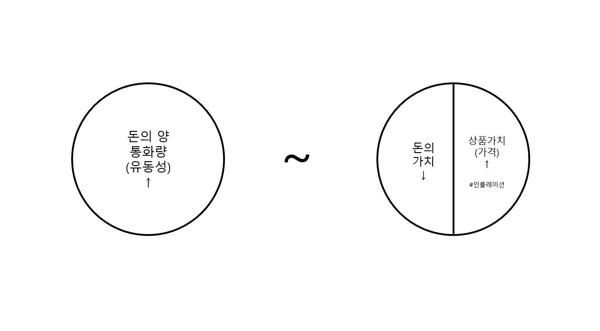하지만 세상은 이 정도로 단순하지 않기 때문에, 돈의 양이 늘어난다고 해서 곧바로 물가가 오르진 않는다. 복잡한 세상이 어떻게 생겼는지를 쉽게 보여주는 규칙이 한 가지 있다. MV=P Y라는 것이다. M(돈의 양)V(돈의 이동 속도)=P(물가) Y(생산량)이다.
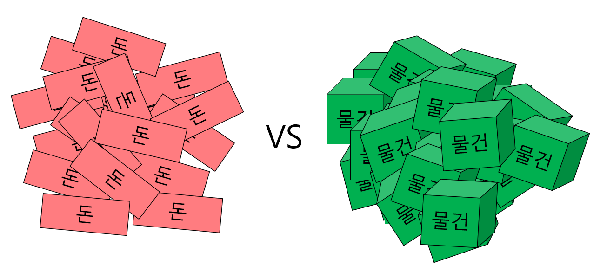(3) 인플레이션, 디플레이션 그래서 뭐가 좋은거야?
인플레이션이 심해지면,
디플레이션이 심해지면,
그럼 결론은 안정적(급격하지 않은)이고 지속적인 인플레이션이 좋다. 심리요인
이렇게 중앙은행이 금리를 통하여 한 국가의 돈의 양을 조절하고, 그에 따른 여러 금융기관들의 신용창출로 돈의 양이(통화량) 최종적으로 결정된다. 이제 관점을 넓힐 시간이다. 우리나라만 이런 식으로 돈의 양의 조절을 통해 자기만의 돈의 가치를 만들어내는 것이 아니다. 대부분의 나라들이 이런 식으로 각자 자기들의 고유한 돈의 가치를 가지게 된다.
3교시 : 돈의 가치 비교하기 #환율 #국제
그렇게 결정된 각국의 돈의 가치를 서로 비교한 것이 환율이다. 하지만 이렇게 딱딱하게 환율을 사전적으로 이해하는 것은 우리 머리를 복잡하게만 만든다.
➀기본 개념
환율은 외화의 가격이다. 외화의 대장은 달러이므로, 환율은 달러의 가격이라고 생각하면 쉽다.₩/$ : $1 = ₩1000
달러가치가 오르고, 원화가치가 내리면 환율은 올라간다.
₩↓/$↑ : ↑
달러가치가 내리고, 원화가치가 오르면 환율을 떨어진다.
₩↑/$↓ : ↓
환율상승↑ ↓환율하락
$1 = ₩1000
환율상승↑ ↓환율하락
$1 = ₩500
우리나라 수출업자의 입장이다. 우리나라 연필을 미국에서 $1에 1개를 판다고 상상하자.
$1=₩1000 땡길 수 있었는데
환율이 오르면
$1=₩2000씩이나 받아낼 수 있다.
그래서 한국 수출업자는 물건의 가격을 $0.5까지 내려도 환율 때문에 손실이 안 생긴다. 미국에서 한국 물건이 $1에서 $0.5까지, 즉 $0.5의 가격 경쟁력이 생긴 것이다. 미국 수입업자도 $1=₩1000에서 $1=₩2000으로 환율이 오르면 한국물건 ₩1000어치 살 수 있었던 것에서 ₩2000씩이나 더 살 수 있는 것이다. 우리나라 수출, 미국의 수입이 느는 것이다.
환율이 오르면 외국인은 우리나라에 돈을 넣을까? 뺄까?
₩10000을 집어넣는다고 하자.
$10를 ₩10000으로 바꾸고 한국에 돈을 집어넣는다.
환율이 오르면 ₩10000 ÷ ₩2000 = $5밖에 회수가 안 된다. ㅈ된 것이다.
환율이 떨어지면 ₩10000 ÷ ₩500 = $20가 거두어들일 수 있다. ㄱㅇㄷ이다.
따라서
환율이 오를것으로 예상이 되면 외국인은 우리나라에서 돈을 빼고,
환율이 떨어지는 것이 예상이 되면 외국인이 우리나라에 돈을 투자한다.
즉,
달러가치가 상승하고, 원화가치가 하락될 것이 예상되면 우리나라에서 돈을 뺀다.
달러가치가 하락하고, 원화가치가 상승될 것이 예상되면 우리나라에 돈을 넣는다.
환율이 오르면 수입물가가 올라서 수입은 어려워지고, 수출물가는 떨어져서 수출은 쉬워진다. 환율이 오르면 원자재 가격이 올라서 생산비용이 증가해서 비용인플레이션을 일으킨다.
➁심화 개념 : 불가능한 삼위일체
(1) 그게 뭐야?
1.자유로운 자본 이동(수출입), 2.독자적 통화정책, 3.안정된 환율 중 하나는 놓칠 수 밖에 없다. 이 상황은 회사에 말도 잘 듣고, 월급도 조금 받으면서, 오래다니는 사람은 없는 것과 비슷하다.
1.자유로운 자본이동은 외국인 자본이 마음대로 이동이 가능한 것을 말한다. 2.독자적인 통화정책이라고 하면 금리를 낮춰서 경제를 활성화시키는 것이 가능한 것을 의미한다. 그러면 돈은 금리가 높은 곳으로 이동하려는 특성이 있으므로, 외국인 자본이 빠져나갈 위험이 생긴다. 3.안정적 환율은 고정환율을 말한다. 환율이 오르려고 할 때, 정부가 개입해서 외화를 사주면서 환율을 오르지 않도록 막아서 고정환율을 유지한다. 통화강세,약세는 돈이 어디로 몰리느냐에 관한 것이다. 돈이 A국에 몰리면 A의 통화강세, A국에서 돈이 빠지면 A의 통화약세이다. A국으로 피신하기 위해서 돈이 A국에 몰려도 A국의 통화가치는 올라간다.
1O 2O 3X
1O 2O 3X
1O 2O 3X
다만, 4.성장이 세게 나온다면
1O 2O 3O도 가능하다. 성장이 강하게 나오면 해당 국가에서 투자해서 얻게되는 수익률이 금리(빌린 돈을 갚을 때 적용하는 이자율)보다 훨씬 높을 것이므로, 외국인들이 계속 투자를 하려고 해서 자금이 계속 들어온다. 그래서 1.자유로운 자본이동이라는 상황에서 2.독자적인 통화정책으로 금리를 낮게 유지해도, 외국인 자금이 빠져나가지 않는다. 이 상황속에서는 외국인 자본유출 걱정이 없으니 3.환율도 정부의 외환보유고를 이용한 개입없이도 안정적으로 유지된다.
(2) 여러 나라에 적용시켜보기
중국
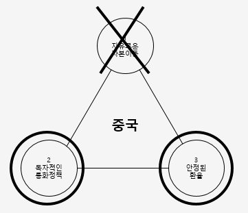유럽
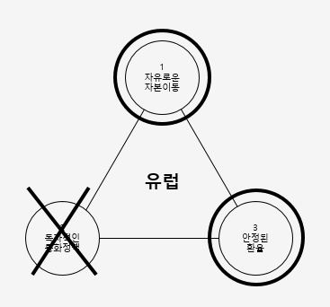미국, 일본, 한국
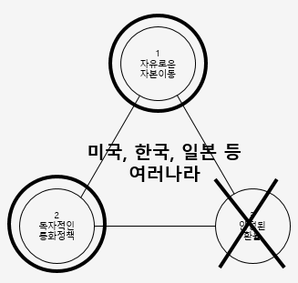(3) 외환위기 설명하기
step1 : 1X 2O 3O
대부분의 개발도상국들이 처음 경제를 성장시킬 때에는, 2.독자적인 통화정책과, 3.안정적인 환율을 가지고 간다. 2.낮은 금리를 유지하면서 경제를 활성화시키고, 3.안정적인 환율로 외국인 자본을 끌어들이는 것이다.
step2 : 1O 2O 3O #자본시장 개방 -> 외국인 자본 유출
그러다가 시간이 지나서, 시장을 넓히면서 1.자본시장의 뚜껑을 쓱 연다. 그러면 기다렸다는 듯이 외국인 자본이 쫙 빠져나간다. 여기서 개발도상국의 실물경제에서 4.성장이 압도적으로 세게 나오면 외국인 자본이 빠져나가지 않아 문제가 되지 않는다. 하지만 개발도상국의 성장은 슬슬 꺾이기 시작했기 때문에, 외국인 자본이 쫙 빠져나가는 것이다.
step3 : 외환보유고 털림, IMF에 도움요청
정부는 경제가 침체될까봐 금리는 못 올리면서, 외환보유고를 털어서 달러를 팔면서 환율이 치솟는 것을 방어한다. 이것을 어려운 말로 환율을 낮게 유지시키고자하는 정책이라서 저환율정책이라고 한다. 하지만 외환보유고는 순식간에 털리고, 외환위기에 처하게 된다.
step4 : 1O 2O 3X
그리곤 결국 3.안정적 환율(고정환율)을 포기하고 변동환율제로 갈아타게 된다.
③ 그래서 통화강세가 좋은거야? 약세가 좋은거야?
If 성장이 강한 시대라면
통화강세가 좋은 것이다. 성장이 강하다는 것은 실물경제에서 파이의 크기가 커지면서, 완전고용에 가까운 상태라는 것이다. 기업은 공장을 원없이 돌리고, 많은 직원들을 고용해서 성장하기 때문이다. 이런 상태에서 자국통화가 강세로 가면, 수출에서의 가격경쟁력이 낮아지고, 수입을 싼 값에 할 수 있게 된다. 성장이 세게 나오면 환율에 따른 수출에서의 가격경쟁력 손실을 성장(기술력)에서 얻은 수출에서의 가격경쟁력 충분히 매꿀 수 있다. 국가 입장에서의 수출과 수입은, 개인 입장에서의 소득과 지출의 관계이다. 모든 사람들은 적게 지불하고 많이 사고 싶어한다. 소득에 특별한 문제가 없으면(수출에 그다지 문제가 없으면), 마트에 가서 모든 물건을 싸게 살 수 있는 상황(수입물가가 낮아지면)은 바람직한 상황이다. 이것은 백화점에서 VIP고객이 되어 할인쿠폰을 쓸 수 있는 것과 비슷하다. 성장이 강한 상태에서의 주로 통화강세를 이루었던 강대국에게는 모든 물건을 싸게 살 수 있는 할인쿠폰을 쥐어져 있는 꼴이었다. 1900년대는 산업혁명의 힘으로 실물경제의 성장이 강했던 시기라서, 당시 화폐가 강세라는 것은 강한 힘을 가지고 있는 것을 의미했다.
If 성장이 약한 시대라면 #환율전쟁
하지만 실물경제에서 성장이 안 나와준다면 이야기는 완전히 뒤바뀐다. 통화약세가 비실비실한 국가(성장이 없는 국가)에게 조금이나마 도움이 되는 것이다.
상황이 안 좋은 음식점과 같다. 장사가 안 되니 할인해서라도 물건을 팔려고 하는 것이다. 하지만 주변 음식점도 상황이 어펴워서 너도 나도 할인 경쟁에 들어가면 할인하는게 의미가 없어진다. 다 같이 힘들어진다. 이것은 이불에 오줌을 싸는 것과 비슷하다. 처음에는 좋지만 조금만 시간이 지나면 엉망진창이 된다. 축구경기를 더 잘 보기 위해 일어서서 보는 것과 같다. 나만 일어나서 보면 잘 보이겠지만, 주변 모든 사람들이 너도 나도 잘 보기 위해 일어서면 일어난 의미가 없어진다. 경기는 앉았을 때와 별반 차이는 없고, 다리만 더 아파진다. 그렇다고 다 일어서서 보는 분위기이면 나 혼자 앉지도 못 한다. 더 안 보이게 되기 때문이다. 그래서 국제적 합의가 중요하다. 나도 앉아서 볼테니, 너도 앉아서 보자는 것이라는 합의가 이루어져야 한다. 하지만 살 수 있는 것은 줄어든다. 수입물가는 오르기 때문이다.
요즘은 저성장 시대라고 불린다. 그래서 요즘 모든 나라들이 자국의 통화를 평가절하해서 환율을 높여서 수출경쟁력을 가지려고 노력한다. 이런 상황을 환율전쟁이라고 한다. 너도나도 싸게 팔려고(수출하려고)만 하고, 아무도 사려고(수입하려) 들지 않는 것이다. 국제적으로 수요가 부족한 것이다. 이전 파트에서 자본주의의 본질적 특성은 공급과잉이고, 이로 인해 수요 부족이라는 근본적인 문제가 현실에서 여러 형태로 나타난다고 했다. 환율전쟁은 오늘날 벌어지는 수요 땅따먹기 싸움이다.
그래서 중요한 것은 성장이다.
④ 환율로 새로고침되는 경제구조
공급과잉에 대한 문제를 조금 더 살펴보자.
해결책은 수요를 늘리는 것이다.
수요를 늘리는 방법에는 두 가지가 있다.
방법1. 내 물건을 사줄 사람 수 자체를 늘리거나
방법2. 사람들이 내 물건을 사고 싶어지게끔 하는 것이다.
우선 방법1부터 실천해보자. 우리나라에는 사람들이 모두 자동차를 가지고 있으니, 외국에다가도 팔아야 겠다는 생각에 이른다. 힘 좀 있다고 하는 나라들끼리 물건을 팔 곳을 차지하기 위해 식민지 쟁탈전을 벌인다.
그리고 이렇게 다른 나라에다가 물건을 팔기 위해서는, 무역하는데 위험요소가 적어야 한다. 마치 두 나라가 축구 경기를 하는데, 공엔 바람이 빠져있고, 축구장에 물 웅덩이가 여기저기 파여있고, 골대 그물은 다 찢어져서 게임이 원화히 진행할 수 없으면 안 되는 것이다.
원활히 경기가 진행되도록하기 위해 당시 세상의 대장이었던 유럽은 금본위제라는 화폐제도를 도입한다.
금본위제는 1.자유로운 자본이동, 2.안정된 환율을 잡고, 3.독자적 통화정책을 포기한 것이다. 금본위제를 포기한 이유 : 트리핀 딜레마 : 달러수요는 엄청 나는데, 금이 양이 한정되어 있어서 그 수요량을 못 쫓아가서, 달러 팔아 금 사자는 아비트리지 전략이 생기고, 결국 금본위제가 못 버팀.
금본위제가 폐지되면서 1.자유로운 자본 이동, 2.독자적 통화정책을 잡고 3.안정된 환율을 포기한 것이다.
1. 금본위제O #세계화
금본위제는 가지고 있는 금의 양에 한정해서 지폐를 찍어내고 그것으로 거래를 하는 것이다. 그리고 국가가 그 금과 돈의 교환비율을 정해준다. 금의 총량도 계산이 가능하니, 국가가 금과 돈의 교환비율만 정하면 찍어내야 하는 돈의 양이 정해졌다. 그러니 자연스레 국가간 환율도 안정되었다. 우리나라에서 금1g에 1000원이고, 미국에서 금1g에 $1이면 $1 = 1000원이라고 환율이 고정되는 원리이다. 그래서 금본위제는 고정환율제도이다. 그렇게 나라간의 환율이 변하지 않고 안정되자, 환율 차이에 의한 손해가 없어졌다. 그러나 투기자들은 빠지고, 상인들의 무역과 투자자의 투자가 급격히 늘어났다. 한 마디로, 금본위제는 자유로운 자본이동, 안정적 환율(고정환율)을 챙길 수 있다. 또한 금본위제는 무역수지 불균형과 인플레이션 문제를 해결해준다. 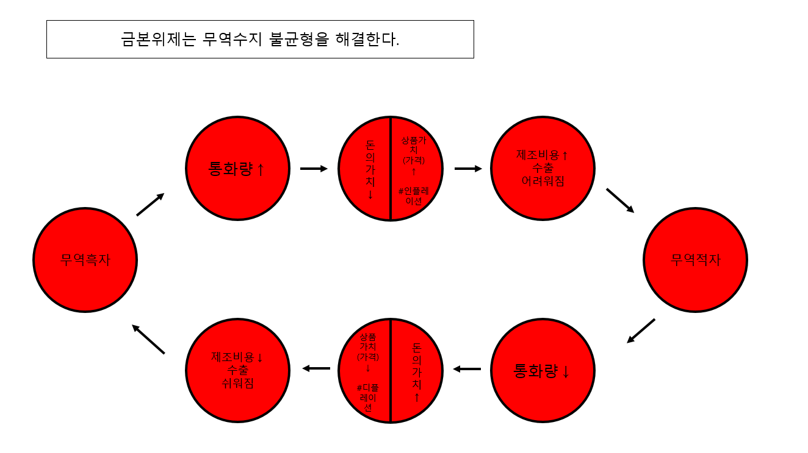 이 때 엄청난 세계화를 이룸. 세계화를 이루면서 S>D인 상황을 해결하고자 해결책1. 시장개척(D늘리기) 해결책2. 가격경쟁(S줄이기)2. 금본위제X #1차 세계대전 1914~18
해결책1 : 늦게 출발한 독일이 시장개척하려고 전쟁 일으킴 1차 대전이 터지자 문제가 생김. 돈이 필요해짐. 그런데 금본위제에 문제가 있다. 독자적인 정책이 불가능하다. 나라들이 대안1. 금본위제를 유지시키고, 나라 멸망. 대안2. 금본위제 버리고, 경제위기 맞기. 대부분이 대안2를 선택하고 금본위제 붕괴됨. 인플레이션의 시대임.3. 금본위제O #대공황 1929
1차 세계대전이 끝나고 더 이상 전쟁은 안 일어날듯 금본위제로 돌아감. 근데 대공황 터짐.
이번엔 대안1을 선택함.
대공황 터짐.
이번엔 대안1을 선택함.